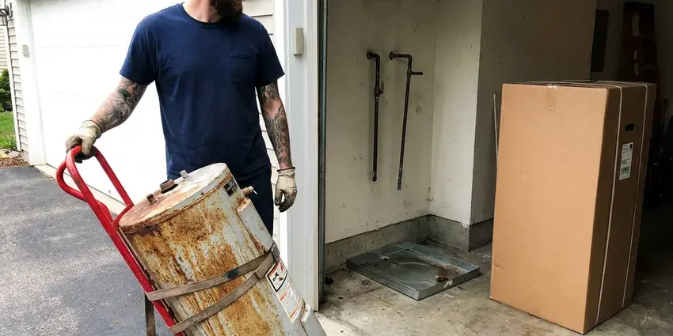

Tankless Water Heater Replacement in Orange, CA
Worn-out tankless unit throwing error codes? We replace tankless water heaters across Orange, CA with right-sized, scale-protected units that deliver steady hot water.
- Dependable Hot Water
- Code Compliant
- Isolation Valves Installed Standard
- Top Brands Available

Stop Waiting on Lukewarm Showers. Upgrade Your Tankless in Orange, CA.
Contact us today for a free estimate and see the benefits of on-demand hot water.
Expert Tankless Water Heater Replacement in Orange, CA
FKM Plumbing handles every part of a tankless swap, including removing the old unit, upgrading the gas line if needed, installing new concentric or PVC venting and adding service valves for annual flushing. You get a neat, code-compliant install and a walkthrough of how to keep the heat exchanger healthy.
Our expertise includes:
- Gas line sizing and upsizing for 199,000 BTU tankless units
- Scale prevention with isolation valves and inline filtration options
- Expert removal and disposal of old water heaters.

Additional Plumbing Replacement Services in Orange, CA
When repairs are no longer enough, our replacement services in Orange, CA deliver durable upgrades that restore full performance.


Water Heater Replacement in Orange


Customers
Why Choose FKM Plumbing for Tankless Water Heater Replacement in Orange, CA?
Our expertise means your new tankless unit is installed correctly the first time, preventing common issues that come from improper sizing or connection.
- Endless Hot Water, Never run out of hot water, even during peak demand, a true luxury for busy Orange households with multiple showers or large families.
- Scale Protection, Every install includes isolation valves so the heat exchanger can be descaled without cutting into the pipes.
- Increased Lifespan, Modern tankless water heaters often last much longer than conventional tank models, offering a better long-term investment.
Citywide Coverage
We understand the demands of Orange homes and are ready to handle tankless water heater replacements efficiently. Residents across the entire area have access to our expert plumbing services.
Experienced Team
When you choose FKM Plumbing, you get a team that knows the ins and outs of every major tankless brand. That means a precise and reliable installation for your home's requirements.
Safety-First Approach
Safety and code compliance are paramount in every tankless water heater replacement we perform. Our installations follow all Southern California and local Orange plumbing and gas codes, so your system operates safely and efficiently.
Trusted Certified Orange Plumbing Services Professionals
At FKM Plumbing, we take pride in providing certified plumbing services throughout Orange, CA. Backed by leading industry credentials, our experienced plumbers combine technical skill with genuine customer care. Whether it is repair, installation, or maintenance, we follow strict safety and quality standards to deliver lasting results you can trust.
Call Us Now PHCC Plumbing Contractor Recognition
PHCC Plumbing Contractor Recognition Better Business Bureau (BBB) Accreditation
Better Business Bureau (BBB) Accreditation Angi Certified Pro
Angi Certified Pro ISO 9001 Quality Management Certification
ISO 9001 Quality Management CertificationReliable Tankless Water Heater Replacement Services in Orange, CA
Residential Tankless Water Heater Replacement in Orange
For homeowners in Orange, upgrading to a tankless water heater offers significant benefits like endless hot water and reduced energy use. We assess your household's hot water demand to recommend the right sized unit, so you get optimal performance. Our team handles everything from safely disconnecting your old unit to installing the new tankless system. That includes any needed gas and water line adjustments and venting changes to meet current codes.

Tankless vs. Tank Water Heater Conversion in Orange, CA
Thinking about converting from a traditional tank water heater to a tankless system in your Orange, CA home? This is a common and worthwhile upgrade, but it requires specialized expertise. We handle the entire conversion, which can involve rerouting gas lines, upgrading electrical service, modifying water lines and installing new venting. Our team makes for a smooth transition, so you can enjoy the long-term benefits of a modern, efficient tankless system.
Commercial Tankless Water Heater Replacement in Orange, CA
Businesses in Orange, CA often need robust hot water solutions, and tankless systems can provide the efficiency and capacity needed. We specialize in replacing commercial tankless units for restaurants, offices and other facilities with minimal disruption to your operations. Our plumbers are experienced with high-capacity models and complex plumbing layouts. We deliver a reliable hot water supply that meets your business's demands and health code requirements.
Exterior Mount Tankless Units in Orange, CA
Many homes have tankless heaters mounted on an exterior wall with no venting at all, since the unit exhausts directly outside. These units face sun, rain and temperature swings, which can break down plastic covers and wiring over time. Freezing pipes are rare in most of Southern California, and many homes have exposed outdoor plumbing that would never pass in a harsher climate. When we replace them, we check the pipe cover, freeze protection settings and the electrical connection. We can add a protective pipe cover kit to guard the water and gas lines. Exterior models are often the simplest swap when the gas line is already sized correctly.
Commercial Tankless Replacement in Orange
Restaurants, salons and small offices often use multiple tankless units linked together on a rack system. When one or more units fail, we replace them and rebalance the cascade controls so they split the load. We check gas pressure under full demand, since commercial racks can draw more than 600,000 BTU combined. Scheduling is easy to work around, so we can work after hours and keep your business open. We also set up a descaling schedule matched to your water usage.
Gas Tankless Water Heater Replacement in Orange
Many homes in Orange rely on natural gas for water heating, and gas tankless units are a highly efficient option. Our gas tankless water heater replacement service includes careful inspection of your existing gas lines, proper sizing of new gas lines if needed, and secure venting to the outdoors. We prioritize safety. All gas connections and combustion air requirements meet Southern California and local codes, preventing potential hazards and maximizing efficiency.
Electric Tankless Water Heater Replacement in Orange, CA
For properties without natural gas access or those looking for an all-electric solution, electric tankless water heaters are a viable choice. FKM Plumbing offers electric tankless water heater replacement services in Orange, CA. This often involves careful assessment of your home's electrical panel capacity, as these units require significant amperage. We make sure your new electric tankless unit is installed safely and correctly, providing on-demand hot water without the need for gas lines.

Condensing Tankless Replacement in Orange
Condensing tankless units like the Navien NPE series or Rinnai Sensei reach efficiencies above 90 percent by recovering heat from exhaust gases. They vent through inexpensive PVC and produce acidic condensate that must be neutralized and drained properly. We install a neutralizer cartridge and route the condensate line to an approved drain. Hot inland summers push water heaters and pool plumbing hard, while coastal salt air can corrode exposed metal fittings. Condensing units still save gas because they work year-round on showers, laundry and dishes. We explain the cost difference so you can decide if the efficiency gain is worth the price.
Tankless Water Heater Replacement Near Me in Orange, CA
If you are searching for tankless water heater replacement near me in Orange, CA, FKM Plumbing is your local expert. Our service area covers the whole region, so a professional plumber is always close by when you need a new, efficient hot water solution. We are known for quick response times and reliable service for all tankless installations.
When your tankless unit needs replacing, you want a reliable local company. We aim to be the go-to choice for tankless water heater replacement near me in Orange, offering reliable solutions and transparent pricing to our neighbors throughout the community.
FKM Plumbing at a Glance
- Licensed and insured plumbers serving Orange, CA
- 24/7 emergency service with same-day scheduling
- Clear written estimates, no hidden fees
- 4.8-star rated by 754+ Southern California customers
Orange Map
Orange Information
- Population
- 138,337
- Area codes
- 714/949/657
- Service area
- Orange and communities within 40 miles
- Nearby
- Santa Ana, Tustin, Garden Grove, Anaheim
Replacing your tankless water heater in Orange, CA is a sound investment, especially with seasonal temperature swings and the need for efficient hot water in modern homes.
Expert Services
Trust our professionals for reliable FKM Plumbing solutions in Orange, CA.
Our Specialized Plumbing Services in Orange, CA
At FKM Plumbing, we provide a complete range of plumbing services across Orange, CA. From leak detection to full system installations, our team ensures fast, precise, and affordable service for both residential and commercial properties. Explore our core services below:


How Our Tankless Water Heater Replacement Process Works in Orange, CA
Replacing a tankless heater takes planning around gas, venting and water. Here is how we keep it simple.
Request a Quote
Call (213) 871-0701 with your current model number and a photo of the install. We give you a rough price and schedule a visit.
Size and Inspect
Our tech measures gas line size, meter capacity, venting path and water hardness. We recommend a unit that matches your hot water demand.
Install and Test
We remove the old heater, install the new one with service valves and venting, then test gas pressure and combustion. You get a walkthrough on settings and annual flushing.
Frequently Asked Questions About Tankless Water Heater Replacement in Orange
A like-for-like gas tankless replacement usually runs $2,800 to $4,500 installed, depending on the brand and venting. Converting from a tank to tankless often costs $4,000 to $6,500 because of gas line and venting upgrades. We give you a written quote before any work starts.
To extend the life and efficiency of your new tankless water heater, regular maintenance is crucial, especially in areas with hard water. This typically involves annual flushing to remove mineral buildup, checking the air filter, and inspecting gas and water connections. FKM Plumbing offers maintenance plans to help keep your unit in top condition.
DIY tankless water heater replacement is generally not recommended due to the complexity of gas lines, high-voltage electricity, water connections and venting requirements. Improper installation can lead to serious gas leaks, carbon monoxide poisoning, water damage or electrical hazards. It is best to hire a licensed and experienced plumber like FKM Plumbing.
Yes, in most areas of Orange and Southern California, a permit is required for tankless water heater replacement, especially if it involves gas line changes or significant electrical work. Our team at FKM Plumbing will handle all required permitting so your installation is fully compliant with local building codes and safety regulations.
New tankless water heaters typically come with a manufacturer's warranty, which usually covers the heat exchanger for 10 to 15 years and parts for 3 to 5 years. FKM Plumbing also provides a labor warranty on our installation work for your peace of mind. We will discuss warranty details for your chosen unit during your consultation.
New tankless water heaters usually come with a manufacturer's warranty on the heat exchanger, usually 10 to 15 years, and on parts, usually 3 to 5 years. FKM Plumbing also provides a warranty on our installation workmanship. We will review all warranty details with you before your replacement so you understand your coverage.
A direct swap typically takes four to six hours. A tank to tankless conversion with new gas and venting typically takes a full day.
Common signs that your tankless water heater needs replacement include repeated error codes, inconsistent water temperature, reduced hot water flow or a complete lack of hot water. If your unit is over 15 to 20 years old and repairs are becoming frequent and costly, replacement is often the more sensible choice.
What People Are Saying About Our Plumbing Experts?

James P.
Our commercial plumbing system had a leak under the sink, and FKM Plumbing handled it professionally. The plumbers arrived quickly and restored everything without disruption to our customers.
Commercial Plumbing · Westminster, CA
Sofia M.
Two new toilets installed in one visit, no mess left behind, and the tech even adjusted a faucet he noticed was dripping. Fair pricing and really friendly.
Toilet Installation · Garden Grove, CA
Mark T.
When our office needed drain cleaning, FKM Plumbing provided quick, reliable service. The plumber arrived on time and made sure every drain flowed perfectly before leaving. Very satisfied.
Drain Cleaning · Anaheim, CA
Daniel K.
A pipe burst at 11 pm and they actually answered. The plumber showed up within the hour, shut everything down, and had us back to normal the next morning. Could not ask for more.
Emergency Plumbing · Westminster, CALaura S.
I scheduled a water heater replacement, and the team made the process smooth and affordable. The new unit works perfectly, and they cleaned up after completing the job.
Water Heater Replacement · Tustin, CA
Patricia H.
We had a slab leak that two other companies could not find. FKM Plumbing located it in under an hour, explained our options, and the price matched the quote to the dollar.
Slab Leak Repair · Orange, CA